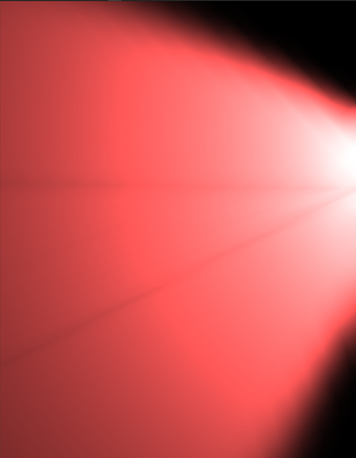
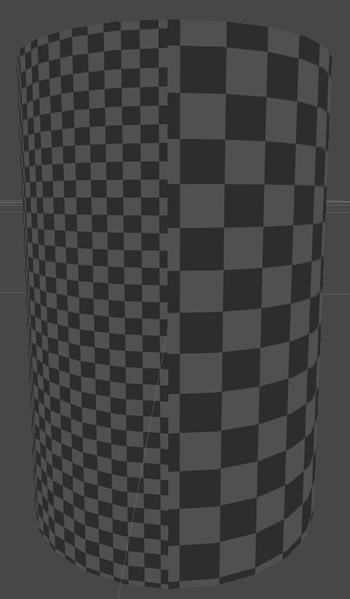
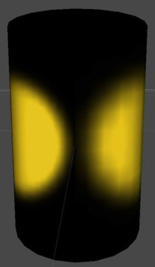

Unity can unwrap your MeshThe main graphics primitive of Unity. Meshes make up a large part of your 3D worlds. Unity supports triangulated or Quadrangulated polygon meshes. Nurbs, Nurms, Subdiv surfaces must be converted to polygons. More info
See in Glossary for you to generate lightmapA pre-rendered texture that contains the effects of light sources on static objects in the scene. Lightmaps are overlaid on top of scene geometry to create the effect of lighting. More info
See in Glossary UVs. To access the settings for generating lightmap UVs, open the Model’s Import Settings, navigate to Meshes, and tick the Generate Lightmap UVs checkbox. This generates your lightmap UVs into UV2, if the channel is present. If the UV2 channel is not present, Unity uses primary UVs.
Click the Advanced foldout to open the settings.
Settings for Generate Lightmap UVs:
| Property: | Function: |
|---|---|
| Hard Angle | The angle between neighboring triangles (in degrees) after which Unity considers it a hard edge and creates a seam. You can set this to a value between 0 and 180. This is set to 88 degrees by default. If you set this to 180 degrees, Unity considers all edges smooth, which is realistic for organic models. The default value (88 degrees) is realistic for mechanical models. |
| Pack Margin | The margin between neighboring charts (in pixels), assuming the Mesh takes up the entire 1024x1024 lightmap. You can set this to a value between 1 and 64. A larger value increases the margin, but also increases the amount of space the chart needs. This is set to 4 pixels by default. For more information, see Pack Margin, below. |
| Angle Error | The maximum possible deviation of UV angles from the angles in the source geometry (as a percentage from 0–100). This is set to 8% by default. This controls how different the triangles in UV space can be to the triangles in the original geometry. Usually this should be fairly low, to avoid artifacts when applying the lightmap. |
| Area Error | The maximum possible deviation of UV areas from the areas in the source geometry (as a percentage from 0–100). This is set to 15% by default. This controls how well Unity preserves the relative triangle areas. Increasing the value allows you to create fewer charts. However, increasing the value can change the resolution of the triangles, so make sure the resulting distortion does not deteriorate the lightmap quality. |
You can also provide your own UVs for your lightmaps. A good UV set for lightmaps should adhere to the following rules:
It should be within the [0,1] x [0,1] UV space.
It should have a wide enough margin between individual charts. For more information, see documentation on UV overlap feedback.
It should not have any overlapping faces.
There should be a low difference between the angles in the UV and the angles in the original geometry. See Angle distortion, below.
There should be a low difference between the relative scale of triangles in the UV and the relative scale of the triangles in the original geometry), unless you want some areas to have a bigger lightmap resolution. See Area distortion, below.
To allow filtering, the lightmap contains lighting information in texels near the chart border, so always include some margin between charts to avoid light bleeding when applying the lightmap.
The lightmap resolution defines the texel resolution of your lightmaps. LightmappersA tool in Unity that bakes lightmaps according to the arrangement of lights and geometry in your scene. More info
See in Glossary dilate some chart texels in the lightmap to avoid black edges, so the UV charts of your Mesh need to be at least two full texels apart from each other to avoid light bleeding. Use the Pack Margin setting to ensure you have enough margin between the UV charts of your geometry.
In lightmap UV space, the padding between charts need to be at least two full texels in order to avoid UV overlapping and accidental light bleeding. In this image, the black space represents the space between charts.
The following screenshots demonstrate equal resolution, but with different UVs. The first image has a high Angle Error, and the result contains unintended artifacts. The second image has the default Angle Error (8%). In Meshes with more triangles, angle distortion can significantly distort the shape.

In the image below, two spotlights with the same parameters light the sides of a cylinder. The right-hand side of the cylinder has a higher Area Error value, which distorts the triangles and leads to a lower resolution, creating artifacts in the light.

2018–03–28 Page published with limited editorial review
Progressive Lightmapper added in 2018.1 NewIn20181
Did you find this page useful? Please give it a rating: